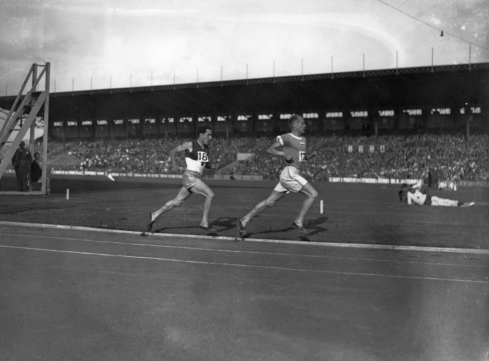

A TRADITION OF
KARHU WORDT OPGERICHT
Ab sportartiklar Oy stichten een kleine werkplaats in het centrum van Helsinki. Hier werd lokaal ingekocht hout verwerkt in producten als: ski's, speren en discussen. Hardloopschoenen werden ook gemaakt en werden destijds gedragen door Hannes Kolehmainen, de eerste “Flying Finn”, en Ville Ritola.
FLYING FINNS
De bedrijfsnaam wordt aangepast naar Karhu, wat in het Fins beer betekent. “The Flying Finns” domineren de hardloopbanen over de hele wereld wat ervoor zorgt dat Karhu over de hele wereld bekent wordt. Oh en een man genaamd Paavo Nurmi komt thuis met negen gouden olympische plakken
De drie strepen
Karhu is dominant op de Olympische spelen van 1952 in Helsinki Finland. Met 15 gouden plakken van hardlopers op Karhu Spikes. Karhu verkoopt het drie strepen trademark aan een bekend atletiek merk die er momenteel nog steeds gebruik van maakt
M-symbool
Karhu registreert officieel het bekende M-symbool. Het symbool wordt gebruikt op de hardloopschoenen. De M verwijst naar "Mestari", dat staat voor "kampioen" in het Fins. Over de jaren heeft Karhu verschillende varianten van het M-symbool gebruikt op haar schoenen. Ook vandaag wordt er nog steeds gebruik van gemaakt.
Lucht
Met de behoefte om constant te blijven innoveren ontwikkeld Karhu het eerste gepatenteerde "Air Cushion" mid-zool systeem voor de Karhu hardloopschoenen.